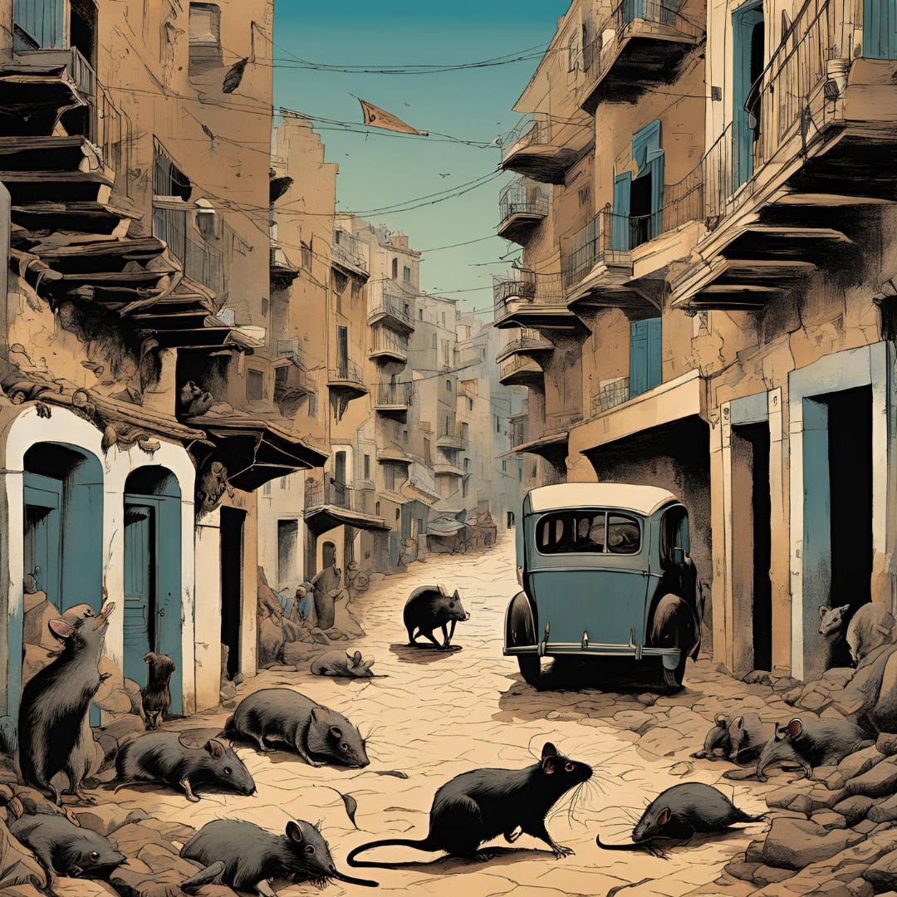

『페스트』
목차
작가
알베르 카뮈
출판일
1947년
감상평에 대한 AI그림
알베르 카뮈의 소설 『페스트』는 전염병이 창궐한 도시에서 인간의 다양한 반응과 내면을 깊이 있게 그려낸 작품입니다.
주인공 리유를 비롯한 여러 인물들은 절망적인 상황 속에서도 연대와 희망을 찾아가는 모습을 보여줍니다.
이 작품은 부조리한 현실 속에서 인간의 존엄성과 연대의 가치를 되새기게 합니다.

감상평에 대한 AI 감정 평가
~~~~AI평가~~~~~
✨ 긍정적 😃: 인간애와 연대의 가치를 아름답게 그려낸 점이 인상 깊었습니다.
✨ 감동적 😥: 절망 속에서도 희망을 찾는 주인공들의 모습이 깊은 여운을 남겼습니다.
✨ 비판적 🤔: 철학적 메시지가 다소 무겁게 느껴질 수 있습니다.
✨ 중립적 😐: 이야기가 느리게 진행되지만, 그만큼 인물의 내면이 섬세하게 표현되었습니다.